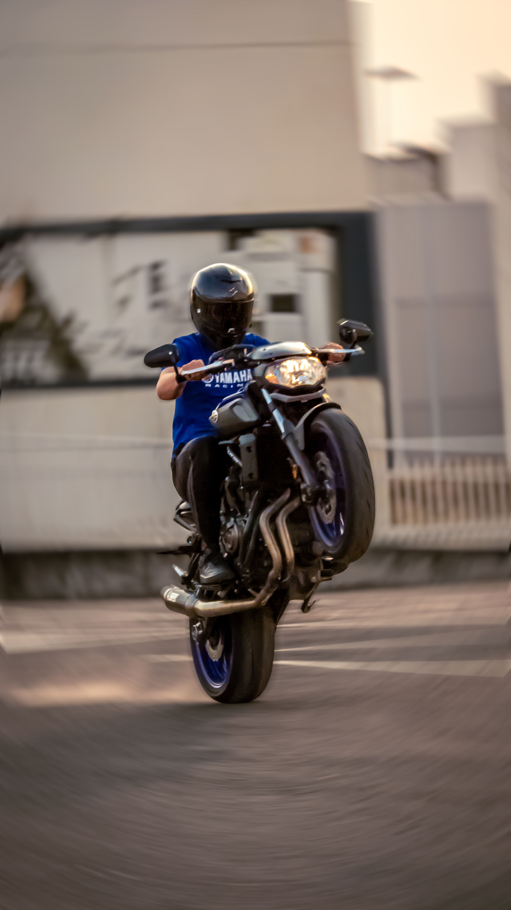
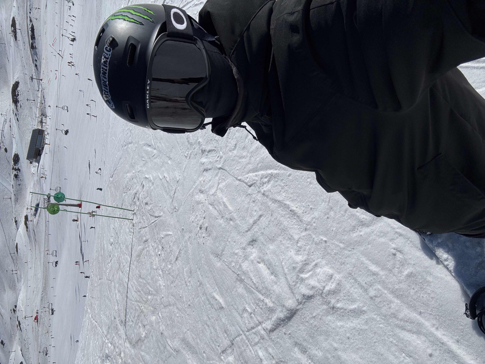
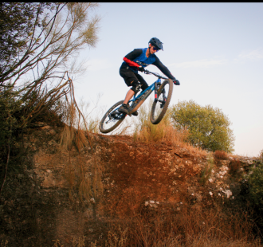
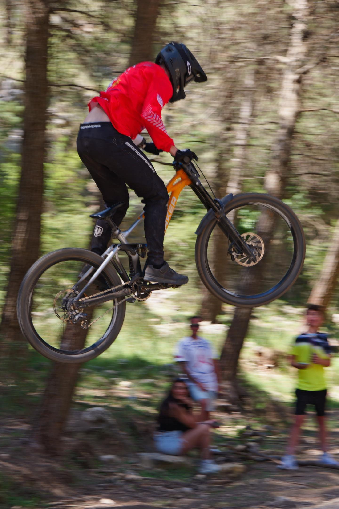
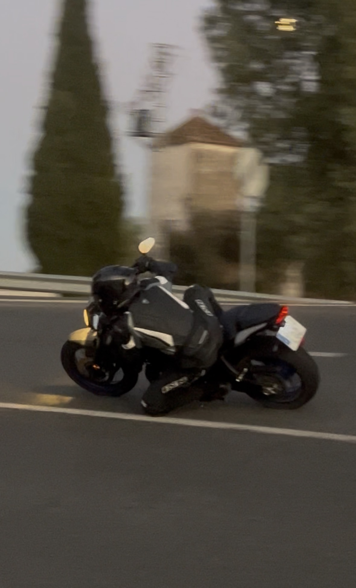

2022a 2024
Formación Profesional Básica / ESOCompletado
Calasancio, Córdoba
Realicé este grado básico de Informática (FPB) con espectativa de convalidar la ESO, pero descubrí que la Informática era algo que realmente me apasionaba.
Estudiante de ASIR, administración de sistemas y redes
Aprendiendo a mejorar cada día. Esta es mi trayectoria.
Ver mi trayectoria
Mi nombre es Adrián, soy estudiante de ASIR, deportista de Enduro/DH compitiendo a nivel Nacional y aficionado al mundo del Motor.
Calasancio, Córdoba
Realicé este grado básico de Informática (FPB) con espectativa de convalidar la ESO, pero descubrí que la Informática era algo que realmente me apasionaba.
IES Medina Azahara, Córdoba
AL acabar la FPB, me interesé mucho por el grado de Sistemas Microinformáticos y Redes (SMR), ya que era avanzar la trayectoria y el conocimiento de algo que descubrí que me fascinaba.
Cursos Online / Cuenta Propia
Aparte de el Ciclo que estoy realizando, en mi teimpo libre me gusta realizar cursos sobre Informática (la mayoría sobre Ciberseguridad), en los que obtengo certificados y diplomas de asistencia. Estos cursos son muy útiles para mejorar mi conocimiento mucho más.
IES Medina Azahara, Córdoba
Acabé SMR y tenía claro que lo que me llama la atención eran los Sistemas, entender las Redes y la Ciberseguridad, por eso elegí el Grado Superior de Administración de Sistemas Informáticos y Redes (ASIR).

Desde 2026, nivel Principiante
Después de un accidente en 2020 en la nieve, volví al Snow con muchas ganas, es solo un hobbie de invierno pero aprenderlo es un proceso complicado pero divertido.

Desde 2024, nivel Profesional
Ví a gente entrenando y me gustó, se trata de un deporte exigente en el que tienes que subir pedaleando y hacer bajadas cronometradas lo más rápido posible, actualmente compito a nivel Nacional, (Campeón de Andalucía 2025 y SubCampeón de Andalucía 2026).

Desde 2026, nivel Amateur
Es muy parecido al Enduro, pero la bici está pensada solo para bajar, en estas carreras no pedaleas para arriba, te suben en remonte y solo cronometran una bajada, que suele ser una bajada con saltos y obstacúlos muy peligrosos. Compito a nivel de Andalucía.

Desde 2024, nivel Amateur
Aparte de las bicis me apasionan las motos, empecé con una 125cc pero hace poco cambié a una 700cc, mis habilidades estrella son tocar rodilla y hacer caballitos (éticamente).
Esta web es mi portfolio personal, creada como trabajo de clase para reforzar mis bases de HTML y CSS. Ayudándome de la IA y con mucha creatividad he conseguido que esta WEB consiga un estilo moderno y elegante, justo como me gusta.